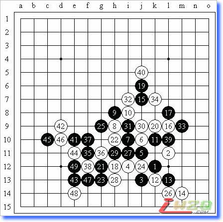
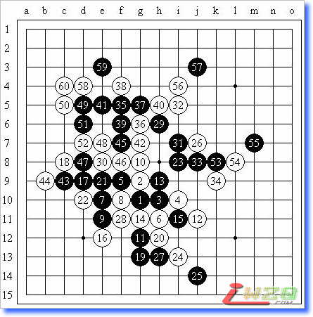

“新春”杯新体验五子棋争先赛六轮棋评
#1 “新春”杯新体验五子棋争先赛六轮棋评作者：屏蔽 发表时间：2008-1-28 0:41:38
转自我的百度空间【复平面】（http://hi.baidu.com/%C6%C1%B1%CE/blog/item/aae80f38d71aa6f6b311c776.html）
＝＝＝＝＝＝＝＝＝＝＝＝＝＝＝
本次我比赛我的赛程可谓异常困难啊，看看我的对手最后的名次就知道了：1、3、4、5、8、9。我的小分（25.5）头一次这么高，比第二高的曹冬足足高了2.5分啊……这次比赛执白4次全胜，执黑2次一胜一负。另外，关于棋谱，由于和RIF规则下的开局有本质的区别，从我个人的角度看，就不给相应的开局命名了，直接给出前三手的坐标。
＝＝＝＝＝＝＝＝＝＝＝＝＝＝＝
北京市东城区海运仓社区活动站，“新春”杯新体验五子棋争先赛第一轮
k12-l11-j13（不换），5A＝i11，李一（黑）胜吴刚（白）

这局总体而言非常失败，但这样的打击也让我恢复了状态。由于是第一局，我并没有意识到这样的开局对黑方非常不利，白4的好点我看到了，但我还是选择了这个局面，当对方“如我所料”地走出白4时，我还没有意识到我即将面临的危险。白8后我看到对方在布八卦，认为他只会防守，且产生了“对手水平不高”的错觉——棋盘两端，只有对手，没有高手低手老手新手。一直到黑17，我和对方互防，认为慢慢积累优势才能避开对方善于防守的长处，18的好点我看到了，但我知道威胁并不大，以至于19的想法冒出后我还沾沾自喜，认为对手随便攻一攻，让我反击一下得个先手就必胜了，实际是大恶手！20！我知道我麻烦大了。目前白棋的反击足够多，多到黑棋不能取胜，下边必须跟防。22！我立刻意识到这个对手并非等闲之辈。如果只是计算力强一些，我是能应付得来的，那样的对手层次最多是中等偏上，但这不假思索的一着显示出了对手执白进攻在思维层次上已经和一般的棋手拉开了差距，而且是质的区别。黑23是绝望中的希望，对手落子很快，或许是对禁手概念理解不到位吧，黑29落下后他很疑惑，直到被指出这是假禁手……虽然因为横9线五连筋的原因双方没有立刻分出胜负，但先手本质上还在白棋。33的位置白棋先占似乎更好，34－i5如何？至38局面处理完毕，我想了半天，由于对手水平不错以及我自身有点虚的缘故，39选择了保守的手段。40并非要点，黑棋在局部没有发展，应该先在左边控制，黑棋此时当然可以在上方选择防守，白棋无胜，但眼看这样局面向和棋发展，还是有些不甘心。41局部的好形状！42随手，43做杀黑棋必胜（44－e12最强防）！
北京市东城区海运仓社区活动站，“新春”杯新体验五子棋争先赛第二轮
g10-g9-h10（不换），5A＝h11，仇云飞（黑）负李一（白）

这是我第一次选择开局点，我的三盘开局开局点都在和天元隔一格的5×5边框上，本意是想避开和RIF规则出现完全相同的开局（其实这里大脑有点短路，这些位置可以通溪月、峡月、长星、寒星、恒星，除此之外，开局点在天元周围可以通云月、雨月、花月）；另一方面，这样离天元不远的开局位置还能部分保留原有的定式基础，同时使局面变得很微妙——这在和高水平棋手对局时是非常明显的。经过分析，我认为以我比较少的定式储存量和云飞的水平而言，这个白4是唯一不能必胜的防点，我决定尝试一下，后来复盘时云飞也提到这个点不能取胜，其实他所说的定式和我印象中的日本老定式完全不是一码子事儿……言归正传，开局时我走得非常痛苦，白10起我陷入了回忆定式的阶段，直到感觉中的白18外止，我看了看局面，松了一口气，觉得还是可以接受的，22考虑过走c9位，但认为不能获得多少优势，没有细想就选择了保守的实战走法，以下交换至白28，局面平稳，白棋在右边有少许外势，黑棋左边局部难以利用，正当我盘算着29－k8后白棋如何进攻时，实战的29令我感到了差距，这样积极的一手迫使我跟住，但防点其实很难选择，似乎走哪里都不够厚实，惊叹云飞的实力之余我选择了冒险的30，彻底封死左边的黑棋，由于26的存在相信黑棋也难有作为。32－i6的想法似乎并不见佳，实战的手法应该更有效率，以下交换至39，40应对，41平凡的好手！42委屈而无奈。以下交换至白54，黑55单挡，局面白优，但是如何选择进攻点？如果不细致考虑的话很可能使优势迅速丧失，那时想不和棋都难了。由于云飞已经进入读秒，利用时间上的优势我决定先选一些必要的步骤：56、57，58争取时间的一手，59有些随意，以下白棋抓e6的“四四”禁手。
北